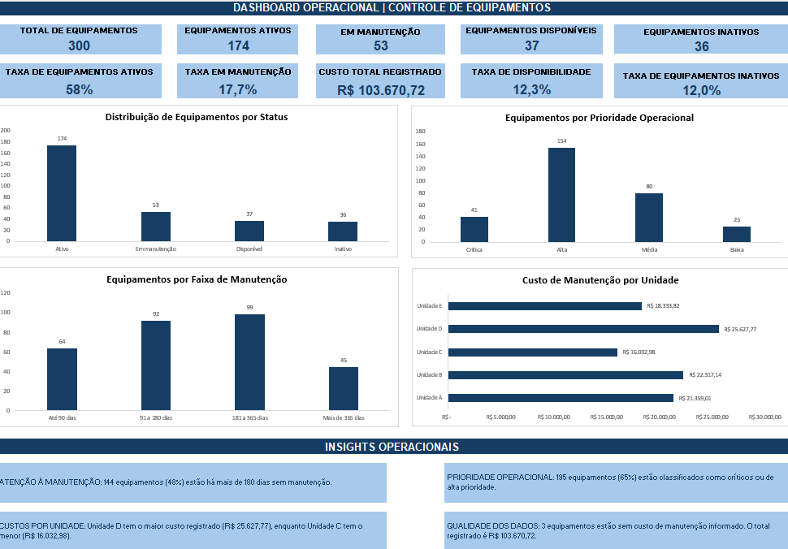

Acompanhamento de manutenção
144 equipamentos (48% da base) estão há mais de 180 dias desde a última manutenção registrada. A necessidade de intervenção deve ser verificada conforme a política de cada equipamento.
Uma solução desenvolvida com Excel e Power Query para organizar informações de equipamentos, acompanhar situações de manutenção, classificar prioridades e analisar custos por unidade.
A base tratada contém 300 equipamentos e permite analisar status, prioridade operacional, tempo desde a última manutenção e custos registrados.
Painel desenvolvido no Excel com indicadores, gráficos de distribuição e cartões de insights para apoiar a leitura gerencial dos dados.

Prévia estática do dashboard desenvolvido no Excel.
Os indicadores ajudam a localizar pontos que merecem investigação e acompanhamento operacional.
144 equipamentos (48% da base) estão há mais de 180 dias desde a última manutenção registrada. A necessidade de intervenção deve ser verificada conforme a política de cada equipamento.
195 equipamentos (65%) foram classificados como críticos ou de alta prioridade pelas regras definidas no tratamento dos dados.
A Unidade D apresenta o maior custo registrado, de R$ 25.627,77. A Unidade C apresenta o menor, de R$ 16.032,98. A comparação não representa, isoladamente, uma medida de eficiência.
Três equipamentos não possuem custo de manutenção informado. Esses valores foram preservados como ausentes, e não tratados automaticamente como custos iguais a zero.
Valores disponíveis na base após o tratamento dos dados.
| Unidade | Custo registrado |
|---|---|
| Unidade D | R$ 25.627,77 |
| Unidade B | R$ 22.317,14 |
| Unidade A | R$ 21.359,01 |
| Unidade E | R$ 18.333,82 |
| Unidade C | R$ 16.032,98 |
| Total registrado | R$ 103.670,72 |
O projeto foi estruturado em etapas para garantir consistência dos dados antes da construção dos indicadores.
Organização dos registros de equipamentos, unidades, status, responsáveis, datas e custos.
Padronização de textos, definição de tipos de dados e criação de colunas auxiliares para análise.
Cálculo de dias desde a última manutenção, faixas de tempo, situação da manutenção e prioridade operacional.
Construção de cartões de indicadores, gráficos por status, prioridade, faixa de manutenção e custos por unidade.
Este projeto demonstra minha prática em tratamento de dados, construção de indicadores e comunicação de resultados operacionais. Estou em formação na área de Tecnologia da Informação e busco oportunidades para continuar desenvolvendo essas competências.
← Voltar ao portfólio principal